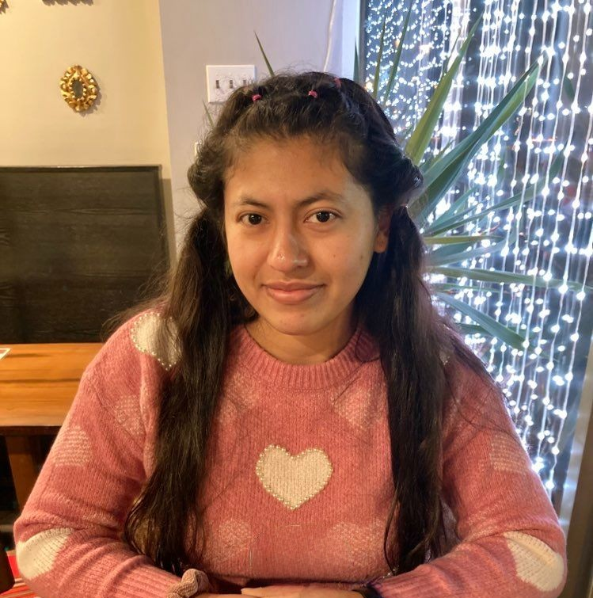

Hello, I am a third year Ph.D. candidate at Rutgers University working under Dr.
Doron Zeilberger. I am also an NSF Graduate Research Fellow. My research
interests include experimental mathematics, combinatorics, and graph theory.
This summer, I am participating in the AMS Mathematics Research Communities
(MRC) in Algebraic Combinatorics. I am also a graduate research mentor for the Combinatorics and Coding Theory in the Tropics
REU.
In previous summers, I have engaged in several research and mentorship programs.
In 2022, I served as a graduate research mentor for the Summer@ICERM
program in Computational Combinatorics. I also participated in the Enhancing Diversity in Graduate Education (EDGE)
program in 2021. Additionally, I was involved in two Research Experiences for Undergraduates (REUs):
one with East Tennessee State University in 2020, and another with the MSRI-UP
program in Berkeley, California, in 2019. For more information about my work, please visit
Past Activities , Research or
click on my CV .
My goals include influencing other Hispanic students to pursue their dreams
and supporting the Hispanic math community. At Stockton University, I was part of the first cohort for Latinas Achieve in STEM
(LaSTEM) , a program led by a Graduate Capstone Student.

Education
- PhD, Mathematics, Rutgers University, 2021 - Present
- MS, Mathematics, Rutgers University, May 2023, New Brunswick, NJ
- Awarded upon completion of written qualifying exams
- BS, Mathematics, Stockton University, May 2021, Galloway, NJ
- Minor: Computer Science
Current Activities
- Co-organizer, Experimental Mathematics Seminar , Rutgers University, 2024 - Present
- Co-organizer, EDGE Webinar, EDGE Foundation, 2023 - Present
- See Past Activities